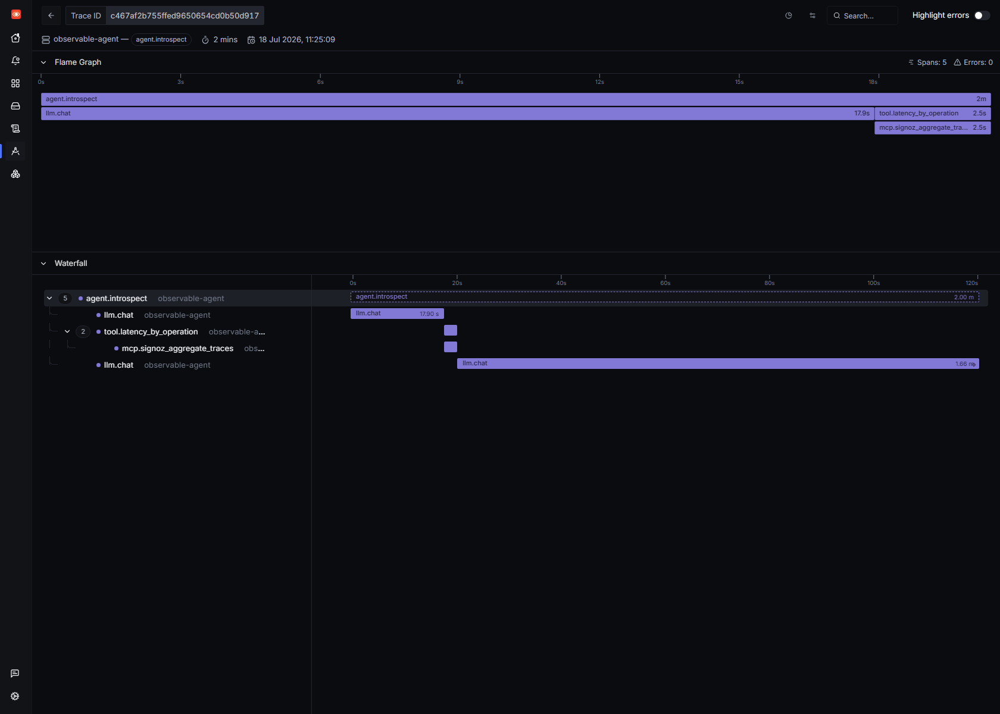
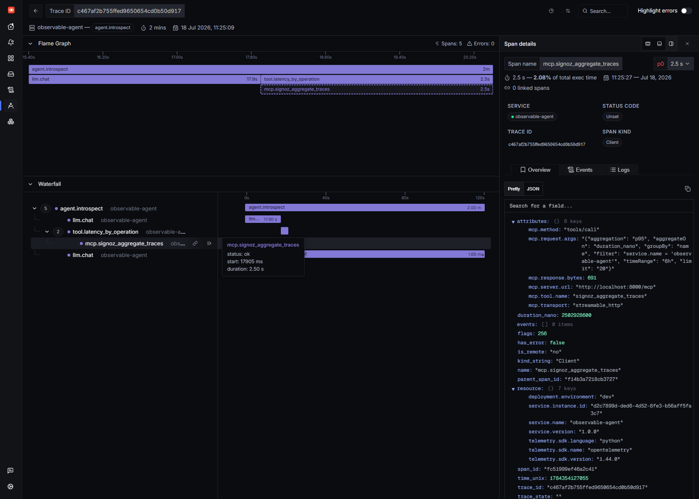
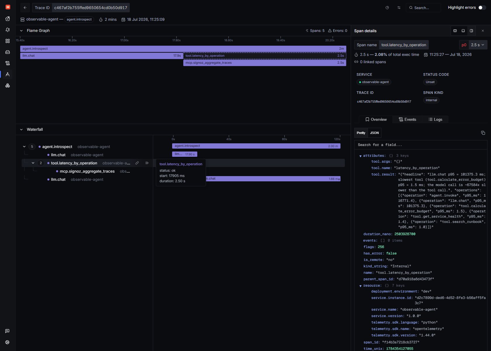

Observability is something we do to our agents. We instrument them, then a human opens SigNoz and reads the waterfall. But SigNoz now ships an MCP server — a Model Context Protocol interface that turns "search traces", "aggregate latency", "list services" into tools an LLM can call. So the console isn't human-only anymore. Which raises a fun question:
What if the agent read its own traces and debugged itself?
So I connected my agent — a tiny qwen2.5:3b running on CPU via Ollama, no GPU, no cloud — to the SigNoz MCP server and asked it one question: "Why are you slow?" It called an MCP tool, pulled its own p95 latency out of SigNoz, and answered:
"The llm.chat model calls have a p95 latency of approximately 101,375.3 ms, while the tool. calls have a p95 of about 1.5 ms. The model call is roughly 67,584 times slower than the tool call... focus on optimizing the llm.chat model calls or consider a more efficient alternative."*
That is the agent re-discovering, from the inside, the exact lesson I found by hand in my first post (one LLM call was 84.5% of a request). Only this time I didn't read the trace. It did.
Everything is local and free: SigNoz v0.133, the SigNoz MCP server, and Ollama on CPU. Here's how it works — and the two things that actually made a tiny model reliable over MCP.
The agent already emitted OpenTelemetry traces (agent.invoke → llm.chat → tool.*). To let it read them back, I gave it a second entrypoint with a different toolset: instead of the fake SRE tools, it gets SigNoz MCP tools, and the whole session is rooted in an agent.introspect span. That means the self-debugging run is itself a trace you can open in SigNoz — the observer, observed:

Top to bottom: agent.introspect → llm.chat (the model decides what to look at) → tool.latency_by_operation → mcp.signoz_aggregate_traces (a real MCP call out to the server) → llm.chat (the diagnosis). The agent made an MCP request to SigNoz as a step inside its own trace.
The MCP server itself is one binary in HTTP mode:
SIGNOZ_URL=http://localhost:8080 SIGNOZ_API_KEY=$KEY \
TRANSPORT_MODE=http MCP_SERVER_PORT=8000 ./signoz-mcp-server
# -> listening on :8000/mcp, 41 tools registered
And the client bridge is deliberately tiny — the agent loop is synchronous, so each tool call opens a short-lived streamable-HTTP session:
from mcp import ClientSession
from mcp.client.streamable_http import streamablehttp_client
class SigNozMCP:
def call_tool(self, name, args):
async def run():
async with streamablehttp_client(self.url) as (r, w, _):
async with ClientSession(r, w) as s:
await s.initialize()
return await s.call_tool(name, args or {})
result = asyncio.run(run())
return "\n".join(c.text for c in result.content if c.type == "text")
Every tool the model calls is wrapped in its own mcp.* span, so the MCP round-trip shows up in the trace with the exact request it made:
def _mcp_call(mcp, tool_name, args):
with tracer.start_as_current_span(f"mcp.{tool_name}", kind=SpanKind.CLIENT) as span:
span.set_attribute("mcp.tool.name", tool_name)
span.set_attribute("mcp.method", "tools/call")
span.set_attribute("mcp.transport", "streamable_http")
span.set_attribute("mcp.request.args", json.dumps(args))
return json.loads(mcp.call_tool(tool_name, args))
Click that span and there's the proof it was a genuine MCP protocol call — and that the agent was querying itself:

mcp.tool.name: signoz_aggregate_traces, mcp.method: tools/call, and the args: aggregate p95 of duration_nano, grouped by span name, filtered to service.name = 'observable-agent'. The agent asked SigNoz for its own latency profile.
Here's the part the demos skip. The SigNoz MCP server exposes 41 tools, and the good ones take rich arguments — nanosecond durations, free-form SigNoz filter expressions, groupBy keys, relative time ranges. That's fine for Claude. It is not fine for a 3B model on CPU. My first attempt handed the model the raw tools. llama3.2:3b didn't even emit a valid tool call — it printed one as text:
A: {"name":"latency_by_operation","parameters:{}} # <- malformed, not a real tool call
Two fixes made it reliable:
llama3.2:3b fumbles the function-calling format; qwen2.5:3b (same size, same CPU) gets it right. Model choice matters more than model size here.list_my_services, latency_by_operation, find_slowest_traces — each of which pins the correct arguments and calls a real MCP tool under the hood. The model picks what to look at; the wrapper handles how to ask.def latency_by_operation(**_):
"""MCP: signoz_aggregate_traces -> p95 latency per operation."""
parsed = _mcp_call(mcp, "signoz_aggregate_traces", {
"aggregation": "p95", "aggregateOn": "duration_nano",
"groupBy": "name", "filter": f"service.name = '{SERVICE}'",
"timeRange": "6h",
})
# ...trim the big JSON down to [{operation, p95_ms}] the model can reason about
This is the pattern for small models + MCP: don't expose the raw firehose; expose a few intention-shaped tools and let the server do the heavy lifting.
Even with a clean tool result, qwen2.5:3b's first diagnosis invented figures out of thin air — "llm.chat p95 is 200ms, tools are 300ms" — numbers that appear nowhere in the data. A 3B model is a bad calculator and a worse transcriber of long decimals.
The fix isn't a bigger model — it's the right division of labour. Percentile math is exactly what SigNoz's aggregation is for, so I compute the comparison in the tool and hand the model a factual, hard-to-hallucinate headline. The model's job is to orchestrate and interpret, not to do nanosecond arithmetic in its head:
headline = (f"llm.chat p95 = {llm_ms} ms; slowest tool ({tool_name}) "
f"p95 = {tool_ms} ms; the model call is ~{ratio}x slower than the tool call.")
return {"headline": headline, "operations": ops}
With that grounding, the diagnosis became correct and specific — and you can see the exact numbers it read, captured in the tool span's result attribute:

llm.chat p95 101,375.3 ms vs the slowest real tool at 1.5 ms. The agent read that and concluded, correctly, that it is ~67,000× bottlenecked on the model — not its logic, not its tools.
One honest wrinkle: the introspection runs are themselves slow (CPU inference), so they pollute the very data the agent reads. The first version of my latency tool proudly reported that agent.introspect was the slowest operation — because it was measuring itself. The mcp.* and telemetry-reading tool.* spans, dominated by the SigNoz round-trip, leaked into the "tool" numbers too and shrank the ratio from ~67,000× to a meaningless 12×.
The fix was to exclude the introspection scaffolding (agent.introspect, mcp.*, the three reader tools) from the comparison so the agent reasons about its real request-serving workload. But it's a genuine lesson worth stating plainly: when an agent observes itself, it perturbs what it observes. You can see it happen span by span.
SigNoz's own MCP examples — reasonably — show a frontier cloud model (Claude, Cursor) querying a production stack. This is the opposite extreme on purpose:
| Typical MCP demo | This | |
|---|---|---|
| Model | Cloud frontier (Claude/GPT) | qwen2.5:3b, CPU-only, local |
| Target | Someone else's production | Its own traces |
| Network | SaaS | Fully offline |
| Point | Human asks about a service | Agent debugs itself |
None of it is cloud-shaped. A 3-billion-parameter model on a laptop CPU used a standards-based protocol to read its own OpenTelemetry data out of a self-hosted backend and reached a true conclusion about its own performance. That is a self-observing agent, built from open parts.
The model doesn't do the percentile math and I curated its tools — that's not cheating, it's system design: the LLM orchestrates and interprets, SigNoz computes, MCP is the contract between them. What's completely real is the loop: the agent chose to look at latency, issued a real tools/call to the SigNoz MCP server, read numbers measured from its own spans, and diagnosed itself. And it did it on hardware you already own.
The takeaway from my first and second posts was "you can't own an agent you can't observe." MCP adds a sequel: once the telemetry is an agent-callable API, the agent can observe itself — and the next step, closing the loop from diagnose to act, is suddenly a very short walk.
Stack: SigNoz v0.133 (self-hosted, WSL2 + Docker Engine), SigNoz MCP server (HTTP/streamable transport, 41 tools), OpenTelemetry Python SDK, Ollama qwen2.5:3b on CPU. Introspection agent + MCP bridge + curated tools: ~200 lines of Python. Built for the WeMakeDevs × SigNoz "Agents of SigNoz" hackathon.